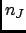
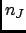

Next: Parameters
Up: Smoothed Static Coherent Structure
Previous: Smoothed Static Coherent Structure
Contents
Theory and implementation
This analysis differs from most of the other scattering-related analysis available in nMOLDYN in the sense that it does not
use a discrete q-vectors generation but results from a integration over all the q-vectors for a given q-shell. In that
context, the static coherent structure factor is defined as:
where  is the number of selected species,
is the number of selected species,  ,  are respectively the number of atoms of species I and J,
and
are respectively the weights for species I and J (see Section 4.2.1 for more
details) and:
,  are respectively the number of atoms of species I and J,
and
are respectively the weights for species I and J (see Section 4.2.1 for more
details) and:
 |
(4.185) |
where q is the radius of the q-shell under process, and
is the distance between atoms and
 . For more detials about SSCSF analysis please refer to Ref. [69]
. For more detials about SSCSF analysis please refer to Ref. [69]
pellegrini eric
2009-10-06